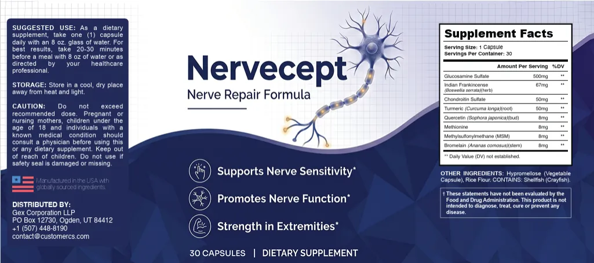

The label image is the most reliable source we have, so this page walks through it.*

The Front Panel
"Nerve Repair Formula" with three claims: Supports Nerve Sensitivity, Promotes Nerve Function, Strength in Extremities. "Repair" is a stronger word than the rest.
See also: Ingredients · Shellfish allergy
Serving
One capsule, 30 per bottle, with an 8 oz glass of water, ideally 20 to 30 minutes before a meal.
See also: Shellfish allergy · FAQ
The Amounts
Glucosamine 500 mg, Boswellia 67 mg, chondroitin 50 mg, turmeric root 50 mg, and 8 mg each of quercetin, methionine, MSM and bromelain. Daily Values are not established.
See also: FAQ · Chondroitin And The Dose Gap
Allergen And Base
Hypromellose capsule and rice flour. CONTAINS: SHELLFISH (CRAYFISH).
See also: Chondroitin And The Dose Gap · Ingredients
Cautions
Do not exceed the dose. Pregnant or nursing mothers, children under 18 and anyone with a known medical condition should consult a physician. Keep out of reach of children. Do not use if the safety seal is damaged or missing.
See also: Ingredients · Shellfish allergy
Distributor
The label names Gex Corporation LLP, Ogden, Utah, and a customer-service email.
See also: Shellfish allergy · FAQ
The label by type.
*These statements have not been evaluated by the Food and Drug Administration. This product is not intended to diagnose, treat, cure or prevent any disease. Results vary from person to person.